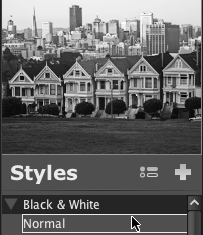

Applicazione degli stili
2 di 6
Applicare uno stile significa aggiungere gli strumenti che lo compongono in cima alla pila strumenti della foto che si sta modificando o delle foto selezionate nella vista Sfoglia.
Per applicare uno stile alla foto che si sta modificando:
- Selezionare la scheda Stili.
- Per visualizzare l'anteprima dello stile, muovere il mouse sul suo nome. Sopra lo stile selezionato sarà visualizzata una piccola anteprima della foto con lo stile scelto.
- Per applicare lo stile alla foto, fare clic sul nome dello stile.
- In alternativa, se già si sa quale stile applicare, selezionare File > Applica stile > e il nome dello stile desiderato. Gli strumenti dello stile saranno aggiunti in cima alla pila strumenti.
Per applicare uno stile a una o più foto della vista Sfoglia:
- Selezionare una o più miniature delle foto a cui si desidera applicare uno stile: usare il tasto MAIUSC per selezionare più miniature contigue o il tasto COMANDO (su Macintosh) o CTRL (su Windows) per selezionare più miniature non contigue.
- Selezionare Sfoglia > Applica stile > e il nome dello stile che si vuole applicare. Gli strumenti dello stile saranno aggiunti in cima alle pile strumenti delle foto selezionate.